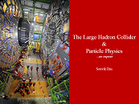

 Particle Physics and the LHC -- an Expose (High school level)
PDF (3.4 MB), PPT (71 MB)
Delivered at Don Bosco School Bandel, Auxiliary Convent Bandel, Don Bosco School Bandel (review), Agrasain Balika Siksha Sadan (review) and St Agnes' Convent School in and around Kolkata, India in January 2009College level (2010) PPT (79 MB), PDF (9.5 MB)
The hypothetical detection of a Higgs boson using the invariant mass of four muons. Delivered at St Stephen's College (University of Delhi), Vidyasagar College (University of Calcutta) and Bethune College (University of Calcutta) in September 2010
College level (2018) PPT (70 MB)
Discovery of the Higgs boson included. Precision studies of the Higgs boson. Higgs pair production. Dark matter and supersymmetry searches. High Luminosity LHC upgrades. Delivered at Coe College in Cedar Rapids, Iowa in Nov 2018
An article in CMS Times describing my experience of working as a graduate student at CERN.
An article in CMS Times describing our effort with the "Pixels in a Box" at Point 5.
An interview with CMS Times on 26 Feb, 2009, following my outreach activity in India.